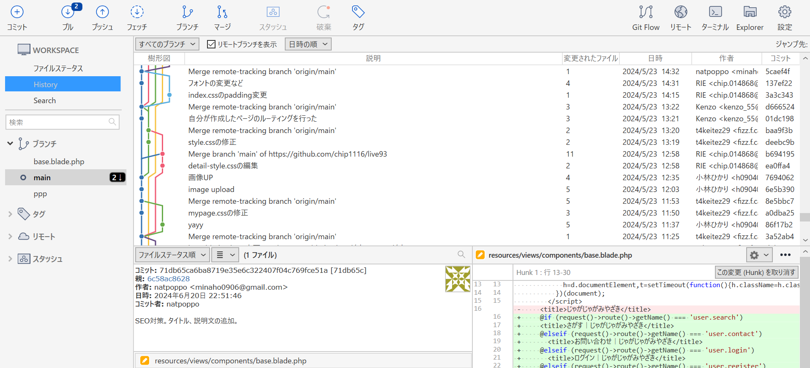

さがして、見つけて、共感する。
☆ターゲットはおとなから子どもまで!
有名な観光地は色々あるけれど、そこに人が集まりがち...「そこはもう行ったことある」なんてことも。
そこで、なるだけnicheな、地元民密着型の口コミ情報サイトを作りました。
Project's Time Line
- 2024.4月中旬
-
チーム結成！
キッカケは帰り道の雑談中。
プロジェクトリーダーの「こんなものを作ってみたい」というアイデア。
力になりたかったので、2つ返事で「マネージャーやるわ!」と言ってみました！
プログラムに意欲的そうなメンバーを選定。声をかけて集結した5人メンバーで開発することになりました。最初は途方もなかったです...
- 4月下旬
-
ミーティング
(約10時間。それ以外は日常的に話し合い)
まずは目標の設定。
それからタイトル、コンセプトなど主に非機能要件のアイデアを出し合いました。
PHPの知識があるメンバーですが、Laravelを新たに学んで開発することを決めました。
理由：目的と開発規模を考えた際にセキュリティの強度が必要だと考えたため。工夫した点は、メンバーが誰でもいつでもアイデアを出せる環境づくりです。
- Figmaを使用してアイデアを出し合う
- Discordを用いたオンラインミーティング など。
工夫したこと

- 5月上旬
-
RDBの定義
(約20時間)
一番最初の壁でした。
必要なテーブル数は？必要なデータは？何と何を紐づけする必要があるのか？
時にはアドバイスを求めながら、話し合いを重ねました。
Migrationを用いてDB管理することもここで決定しました。
特に、DBの内容を"全員が共通理解する"ということの難しさと大事さを感じました。
- 5月中旬
-
デザインの作成
(約15時間)
YouTubeでillustratorの学習をしていたら、ロゴを制作してみたい！と思い、チャレンジしてみました。
- 太陽とフェニックスの木を象徴に、キレイな海や甘酸っぱい日向夏も表現
- 宮崎観光協会のサイトよりラフなイメージに
こだわった点
"コンセプト"に基づいて、想いをかたちにしていくことの大事さを学びました！
その後、トップページのデザインなども担当しました。
- 同時期
-
Laravel環境構築
パッケージ管理用にComposerもインストールし、XAMPPにLaravel開発環境を構築しました。
これまですべてGUIで操作してきたので、ここではじめてCUIでの操作を学びました。 - 5月下旬
-
コーディング
(約20時間)
私は1ページをプログラムするのではなく、皆の手の届かない細かな部分を担当しました。
ex)詳細ページへのユーザ名取得と表示など...Git-Hubでのソース管理をしながら各々が1ページずつプログラムを作っていく方法を取りました。

Git-Hubの使用方法や、各々のページが競合してしまうことに難しさを感じました。 - 6月上旬
-
ページ・機能の修正
(約20時間)
機能を追加するとバグが多くなってきたので、バグの修正などで苦労しました。
私はこの時期主にレスポンシブで字いんへの対応などを行いました。 - 6月中旬
-
本番環境へ移行...完成！！
GCP(Google Cloud Platform)を使用し、本番環境へ移行しました。
ドメインも取得。